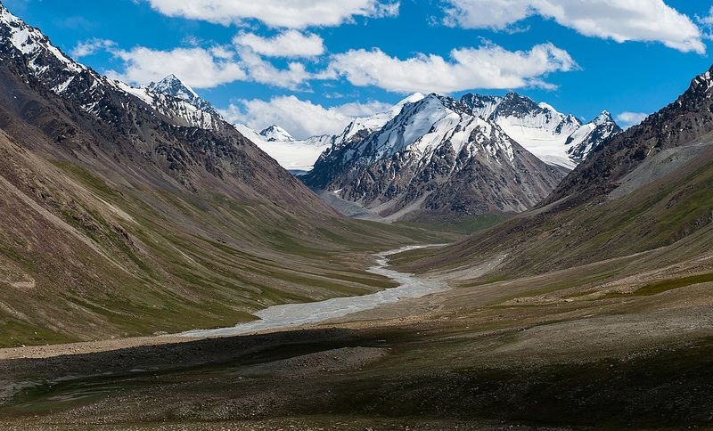

Introduction
Khunjerab National Park is Pakistan’s highest-altitude national park, located in the remote northern region of Gilgit-Baltistan. Established in 1975, it was created to protect the endangered Marco Polo sheep. The park is famous for the Khunjerab Pass, the highest paved international border crossing in the world, connecting Pakistan with China at an elevation of 4,693 meters (15,397 ft).
Landscapes & Ecosystems
The park's landscape is characterized by high-altitude alpine meadows, vast plateaus, and rugged, snow-covered peaks. The extreme cold and high elevation create a fragile ecosystem that is only accessible during the summer months. The park's terrain provides a critical habitat for wildlife adapted to harsh mountain environments.
Biodiversity And Wildlife
Khunjerab is a sanctuary for some of the world's rarest high-altitude species. It is one of the last strongholds for the Marco Polo sheep. The park is also a crucial habitat for the Snow Leopard, which preys on the abundant Himalayan Ibex and Blue Sheep (Bharal) found in the area.
Location On Map
Conservation Efforts
The primary goal of Khunjerab National Park is the protection of the Marco Polo sheep. Conservation efforts are coordinated with the adjacent Taxkorgan Nature Reserve in China, creating a large trans-boundary protected area. Tourism is carefully managed to minimize disturbance to wildlife, and anti-poaching patrols are active within the park.